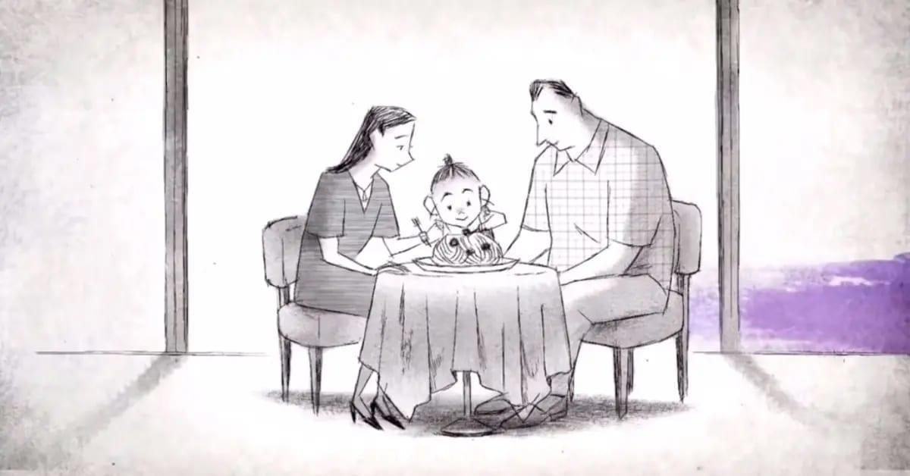

6 obras de animación para cuando no sepas qué ver
Leer másSi me pasara algo, os quiero (2020), cortometraje animado disponible en Netflix y dirigido por Will McCormack y Michael Govier, es una obra breve pero profundamente devastadora. En apenas unos minutos, la película aborda una de las heridas sociales más dolorosas de la sociedad contemporánea estadounidense: la pérdida de un hijo a causa de los tiroteos escolares. Sin mostrar explícitamente el suceso, el corto se centra en las consecuencias emocionales, en el vacío que queda y en la imposibilidad de seguir adelante cuando el dolor no encuentra palabras.
La animación del corto es deliberadamente minimalista. Predominan los trazos simples, casi bocetos, y una paleta de colores apagada con predominio de grises que refuerza la sensación de ausencia. Los personajes parecen frágiles, incompletos, como si pudieran desvanecerse en cualquier momento, y los espacios vacíos refuerzan la sensación de soledad y desolación. Esta austeridad visual no busca impactar visualmente, sino acompañar el estado emocional de los protagonistas: padres rotos por una pérdida que no se nombra de forma directa y enfrentan el duelo en su vida cotidiana.
El estilo del corto, los planos cuidados y la predominancia del silencio hacen que no sea necesario usar la violencia explícita para mostrar este problema social en toda su magnitud. Esto provoca un impacto mayor en el espectador, donde lo importante no es lo que se ve, sino lo que se siente.
El cortometraje no habla del suceso traumático en sí, sino de lo que ocurre después. La historia se construye alrededor de dos padres incapaces de comunicarse entre ellos, atrapados en su propio dolor. El duelo se manifiesta en gestos cotidianos, miradas vacías y espacios que antes estaban llenos de vida. La ausencia del hijo es constante, casi palpable, y la animación permite visualizar ese vacío de una forma poética y profundamente humana.
Aunque el corto está claramente vinculado a la violencia armada en Estados Unidos, su mensaje trasciende fronteras. Si me pasara algo, os quiero no utiliza discursos políticos ni datos estadísticos; su denuncia es emocional. Nos recuerda que el duelo no tiene consuelo ni cierre fácil, recayendo la fuerza del mensaje en la humanización de la tragedia, que obliga al espectador a enfrentarse a un problema que a menudo se reduce a titulares.
Este cortometraje demuestra que la animación puede ser un medio extraordinariamente poderoso para tratar temas sociales complejos. Su brevedad, su silencio y su sencillez visual consiguen un impacto emocional duradero. No ofrece consuelo ni cierre, porque el duelo real tampoco lo hace. En su lugar, deja al espectador con una sensación de vacío y reflexión, recordándonos que detrás de cada tragedia hay vidas marcadas para siempre.
Si me pasara algo, os quiero es una prueba de que la animación no solo sirve para imaginar mundos, sino también para mirar de frente el dolor, la pérdida y las heridas abiertas de nuestra sociedad. El título, una frase sencilla, se convierte en un recordatorio devastador de lo que nunca llegó a decirse a tiempo.
Si quieres participar en nuestra comunidad, tienes alguna pregunta, sugerencia o comentario, contacta con nosotros desde el formulario de Contacto o a través de los siguientes métdos: